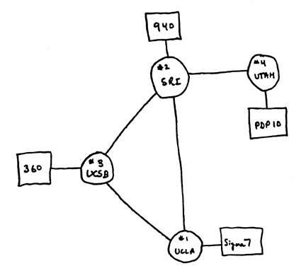
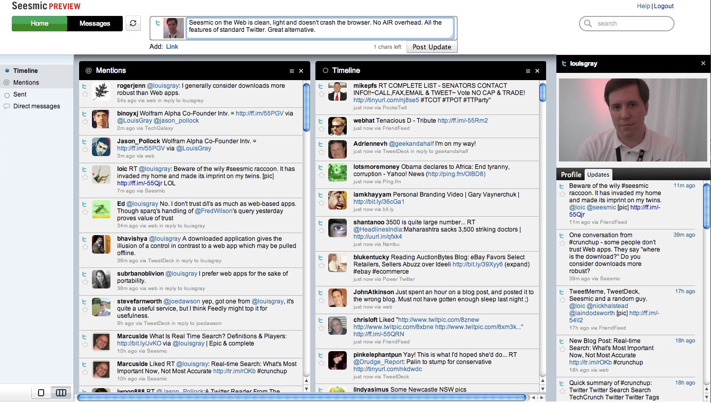
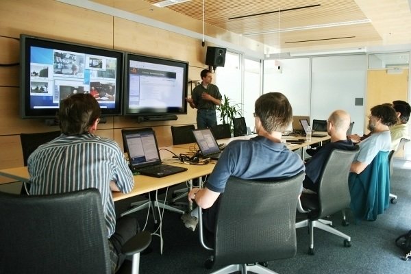

Digital communications technology
...starting from its most basic roots...
stands apart.
For, instead of improving a single part of our lives
this technology changes the ways that we,
as individuals, and as a collective
interact with one another.
Instead of being geographically or temporally constrained
we are only constrained by the artificial
digital affordances we have provided ourselves..
that form the very systems that empower us.
(15 min) - Dr. Elena Simperl - Senior Lecturer